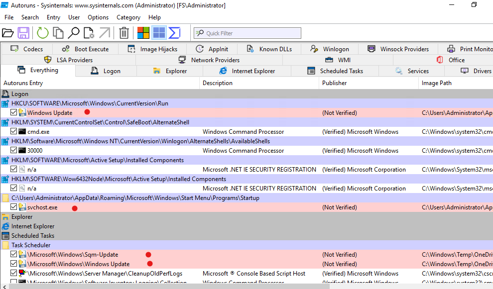
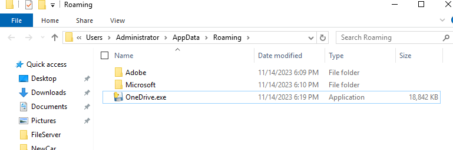
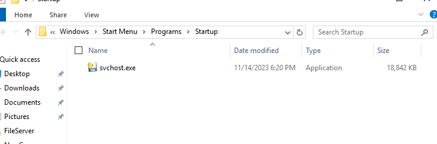
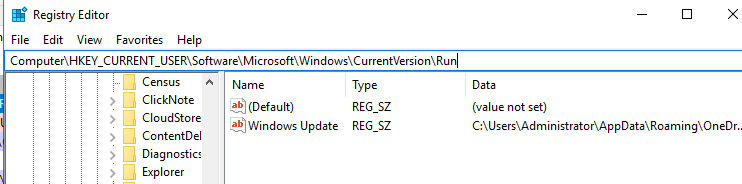
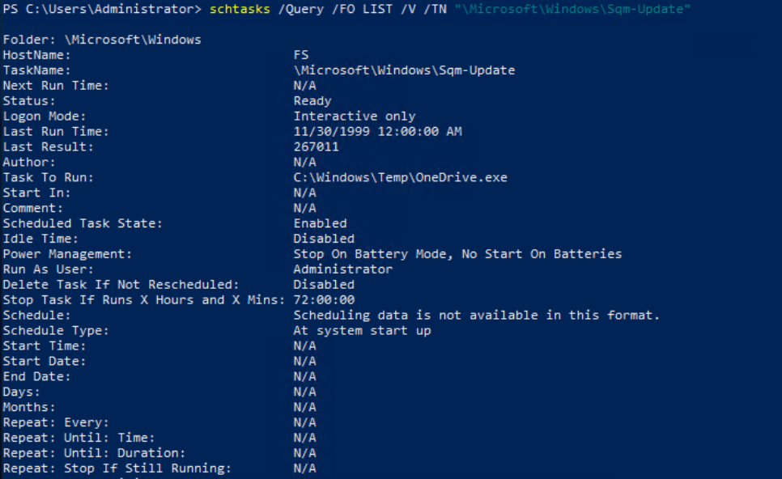
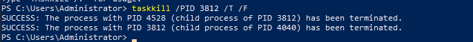
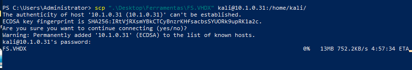

DOCUMENTO CONFIDENCIAL
Classificação: RESTRITO
Número do Caso: INC-FS-2025-001
Data do Incidente: 27/09/2025
Data do Relatório: 27/09/2025
Laboratório: SOC_AL3RT
O presente relatório documenta a investigação forense realizada em um servidor Windows Server 2019 (hostname: FS) que foi comprometido por ransomware identificado como Ransomware.Python/NCSLM. A análise revelou múltiplos vetores de ataque, mecanismos de persistência sofisticados e tentativas de mascaramento através de nomes de processos legítimos do Windows.
OBSERVAÇÃO CRÍTICA: Última atualização em fevereiro de 2023 - sistema desatualizado há mais de 2 anos.
| Localização | Nome do Arquivo | Tamanho | Hash SHA256 | Status Assinatura |
|---|---|---|---|---|
C:\Users\Administrator\AppData\Roaming\OneDrive.exe |
OneDrive.exe | 19.293.482 bytes | 1CB281692409B000C6BFD17C737CE96EC98DEC9A5D420EEB6E5B0C131FC2BD5F | Não Assinado |
C:\Users\Administrator\AppData\Roaming\Microsoft\Windows\Start Menu\Programs\Startup\svchost.exe |
svchost.exe | 19.293.482 bytes | 1CB281692409B000C6BFD17C737CE96EC98DEC9A5D420EEB6E5B0C131FC2BD5F | Não Assinado |
C:\Windows\Temp\OneDrive.exe |
OneDrive.exe | 19.293.482 bytes | 1CB281692409B000C6BFD17C737CE96EC98DEC9A5D420EEB6E5B0C131FC2BD5F | Não Assinado |
Value Name: Windows Update
Value Data: C:\Users\Administrator\AppData\Roaming\OneDrive.exe
Value Name: Update
Value Data: C:\Windows\Temp\OneDrive.exe
C:\Windows\Temp\OneDrive.exeC:\Windows\Temp\OneDrive.exeC:\Users\Administrator\AppData\Roaming\Microsoft\Windows\Start Menu\Programs\Startup\svchost.exe| Atributo | Valor Legítimo | Valor Malicioso |
|---|---|---|
| Localização | C:\Windows\SysWOW64\svchost.exe, C:\Windows\System32\svchost.exe |
C:\Users\Administrator\AppData\Roaming\Microsoft\Windows\Start Menu\Programs\Startup\svchost.exe |
| Tamanho | 45.488 bytes | 19.293.482 bytes |
| Data Modificação | 17/02/2023 12:18:42 PM | 14/11/2023 9:20:16 PM |
| Hash MD5 | D9E224ACFFD36B1C83E8EE2031CCF349 | 77C59720BC328CF9D692A215AA2575AD |
Localizações Legítimas: Esses seria os caminhos legitimos de intalação de uma ferramenta OneDrive
C:\Users\<usuário>\AppData\Local\Microsoft\OneDrive\OneDrive.exeC:\Program Files\Microsoft OneDrive\OneDrive.exeC:\Program Files (x86)\Microsoft OneDrive\OneDrive.exe[!obs] Informações
** Windows Server 2019 e anteriores Não traz necessariamente o cliente OneDrive pré-ativado** como em desktops; qualquerOneDrive.exeencontrado nesses caminhos (ex.:C:\Temp,C:\Users\Public, etc.) deve ser investigado. Fonte:https://learn.microsoft.com/en-us/sharepoint/per-machine-installation?utm_source=chatgpt.com
Localização Maliciosa Identificada:
C:\Users\Administrator\AppData\Roaming\OneDrive.exeTotal de evidências fotográficas: 14 imagens documentadas
Img/Autorun-ferramenta_IOC.png - Processos não assinados detectadosImg/roaming_OneDrive.png - Arquivo em localização não padrãoImg/svchost_startup.png - Processo na pasta de startupImg/ScriptCustom_FInd_onedrive_svchost.png - Ferramenta de identificaçãoImg/Taref_windows_update.png - Tarefa maliciosa disfarçadaImg/Tarefa_Sqm_update.png - Tarefa maliciosa adicionalImg/persistenciaHkey.png - Entradas maliciosas no registroImg/persistencia_tarefas.png - Visão geral das tarefas (desativadas para evitar persistência)Img/processo.png - Processos em execução no momento da análiseImg/processos_pid.png - Identificação de processos específicosImg/ProcessoOneDrive_Percistente.png - Processo malicioso ativoImg/Matando_processo_malicioso.png - Ação de mitigação executadaImg/Configuracao_ferramenta_disk2vhd.png - Preparação para cópia forenseImg/envio_de_copia_FS_VHDX.png - Preservação de evidências para análise seguraNota: Todas as evidências estão detalhadamente apresentadas na sequência de identificação da Seção 7, onde cada imagem é contextualizada no processo de investigação.
Após estabelecer conexão segura via VPN e RDP, foi executado script customizado para inventário completo do ativo:
Objetivo: Coletar informações básicas do sistema para entender o ambiente comprometido.
Identificação de processos suspeitos através do Gerenciador de Tarefas (rocexp64.exe):
Validação da assinaturas e coleta de hash para analise no virus total, com script custom:

Retorno da ferramenta:
"Path","Name","SizeBytes","LastWriteUtc","SignatureStatus","Signer","SignerThumb","TimeStamp","MD5","SHA1","SHA256""C:\Users\Administrator\AppData\Roaming\OneDrive.exe","OneDrive.exe","19293482","11/14/2023 9:19:59 PM","NotSigned","","","","77C59720BC328CF9D692A215AA2575AD","EF1A74599739AB0F91D9CE44C4F4A86B24563E4F","1CB281692409B000C6BFD17C737CE96EC98DEC9A5D420EEB6E5B0C131FC2BD5F""C:\Users\Administrator\AppData\Roaming\Microsoft\Windows\Start Menu\Programs\Startup\svchost.exe","svchost.exe","19293482","11/14/2023 9:20:16 PM","NotSigned","","","","77C59720BC328CF9D692A215AA2575AD","EF1A74599739AB0F91D9CE44C4F4A86B24563E4F","1CB281692409B000C6BFD17C737CE96EC98DEC9A5D420EEB6E5B0C131FC2BD5F"
Descoberta: Processos OneDrive.exe e svchost.exe em execução com comportamento anômalo.
Utilização de ferramenta especializada para identificar processos de inicialização:

Descoberta Crítica:
C:\Users\Administrator\AppData\Roaming\OneDrive.exeC:\Users\Administrator\AppData\Roaming\Microsoft\Windows\Start Menu\Programs\Startup\svchost.exeConfirmação visual dos arquivos maliciosos em suas localizações:


Confirmação: Mesmos arquivos identificados pelo Autoruns em localizações não padrão.
Identificação de mecanismos de persistência no registro do Windows:

Descoberta: Entrada maliciosa "Windows Update" apontando para OneDrive.exe falso.
Identificação de tarefas maliciosas disfarçadas:


Descoberta: Duas tarefas agendadas executando malware na inicialização do sistema.
Resumo dos mecanismos de persistência identificados:

Comandos utilizados para extrair informações das tarefas:
# Extrair detalhes da tarefa Sqm-Update
schtasks /Query /TN "\Microsoft\Windows\Sqm-Update" /XML
# Extrair detalhes da tarefa Windows Update
schtasks /Query /TN "\Microsoft\Windows\Windows Update" /XML
XML da tarefa Sqm-Update:
<?xml version="1.0" encoding="UTF-16"?>
<Task version="1.2" xmlns="http://schemas.microsoft.com/windows/2004/02/mit/task">
<RegistrationInfo>
<URI>\Microsoft\Windows\Sqm-Update</URI>
</RegistrationInfo>
<Principals>
<Principal id="Author">
<UserId>S-1-5-21-2066253582-1997001687-2883272801-500</UserId>
<LogonType>InteractiveToken</LogonType>
</Principal>
</Principals>
<Settings>
<DisallowStartIfOnBatteries>true</DisallowStartIfOnBatteries>
<StopIfGoingOnBatteries>true</StopIfGoingOnBatteries>
<MultipleInstancesPolicy>IgnoreNew</MultipleInstancesPolicy>
<IdleSettings>
<Duration>PT10M</Duration>
<WaitTimeout>PT1H</WaitTimeout>
<StopOnIdleEnd>true</StopOnIdleEnd>
<RestartOnIdle>false</RestartOnIdle>
</IdleSettings>
</Settings>
<Triggers>
<BootTrigger />
</Triggers>
<Actions Context="Author">
<Exec>
<Command>C:\Windows\Temp\OneDrive.exe</Command>
</Exec>
</Actions>
</Task>
XML da tarefa Windows Update:
<?xml version="1.0" encoding="UTF-16"?>
<Task version="1.2" xmlns="http://schemas.microsoft.com/windows/2004/02/mit/task">
<RegistrationInfo>
<URI>\Microsoft\Windows\Windows Update</URI>
</RegistrationInfo>
<Principals>
<Principal id="Author">
<UserId>S-1-5-21-2066253582-1997001687-2883272801-500</UserId>
<LogonType>InteractiveToken</LogonType>
</Principal>
</Principals>
<Settings>
<DisallowStartIfOnBatteries>true</DisallowStartIfOnBatteries>
<StopIfGoingOnBatteries>true</StopIfGoingOnBatteries>
<MultipleInstancesPolicy>IgnoreNew</MultipleInstancesPolicy>
<IdleSettings>
<Duration>PT10M</Duration>
<WaitTimeout>PT1H</WaitTimeout>
<StopOnIdleEnd>true</StopOnIdleEnd>
<RestartOnIdle>false</RestartOnIdle>
</IdleSettings>
</Settings>
<Triggers>
<BootTrigger />
</Triggers>
<Actions Context="Author">
<Exec>
<Command>C:\Windows\Temp\OneDrive.exe</Command>
</Exec>
</Actions>
</Task>
Confirmação: Múltiplos vetores de persistência ativos.
Identificação de PIDs e processos em execução:

Descoberta: Processos maliciosos ativos com PIDs específicos.
Verificação de processo OneDrive persistente em execução:

Confirmação: Malware ativo e executando.
Ação de mitigação imediata:

Ação: Terminação segura do processo malicioso.
Criação de imagem forense para análise posterior:


Ação: Preservação completa do estado do sistema para análise forense posterior.
T1564.001 - Hidden Files and Directories
T1036 - Masquerading
T1547.001 - Registry Run Keys
T1053.005 - Scheduled Tasks
T1547.005 - Startup Items
Remoção Completa de Artefatos:
# Remover arquivos maliciosos
Remove-Item "C:\Users\Administrator\AppData\Roaming\OneDrive.exe" -Force
Remove-Item "C:\Windows\Temp\OneDrive.exe" -Force
Remove-Item "C:\Users\Administrator\AppData\Roaming\Microsoft\Windows\Start Menu\Programs\Startup\svchost.exe" -Force
# Limpar Registry
Remove-ItemProperty -Path "HKCU:\SOFTWARE\Microsoft\Windows\CurrentVersion\Run" -Name "Windows Update"
Remove-ItemProperty -Path "HKLM:\SYSTEM\CurrentControlSet\Control\Session Manager" -Name "Update"
# Remover tarefas agendadas
schtasks /Delete /TN "\Microsoft\Windows\Sqm-Update" /F
schtasks /Delete /TN "\Microsoft\Windows\Windows Update" /F
Verificação de Integridade do Sistema:
sfc /scannowImplementação de Monitoramento:
Hardening do Sistema:
Segurança Defensiva:
Monitoramento Contínuo:
MD5: 77C59720BC328CF9D692A215AA2575AD
SHA1: EF1A74599739AB0F91D9CE44C4F4A86B24563E4F
SHA256: 1CB281692409B000C6BFD17C737CE96EC98DEC9A5D420EEB6E5B0C131FC2BD5F
C:\Users\Administrator\AppData\Roaming\OneDrive.exe
C:\Users\Administrator\AppData\Roaming\Microsoft\Windows\Start Menu\Programs\Startup\svchost.exe
C:\Windows\Temp\OneDrive.exe
HKEY_CURRENT_USER\SOFTWARE\Microsoft\Windows\CurrentVersion\Run\Windows Update
HKEY_LOCAL_MACHINE\SYSTEM\CurrentControlSet\Control\Session Manager\Update
\Microsoft\Windows\Sqm-Update
\Microsoft\Windows\Windows Update
O incidente investigado revela um ataque de ransomware sofisticado com múltiplos vetores de persistência e técnicas avançadas de evasão. O malware Ransomware.Python/NCSLM foi identificado e completamente mapeado, permitindo a remoção segura de todos os artefatos maliciosos.
Img/RELATÓRIO ELABORADO POR:
Jackson Antonio Zacarias Savoldi
Analista de Segurança Cibernética
Especialização em Segurança da Informação
LinkedIn: linkedin.com/in/jacksonzacarias
Instagram: @jacksonsavoldi
Laboratório: SOC_AL3RT
APROVAÇÃO:
[Assinatura do Supervisor]
[Data de Aprovação]
DOCUMENTO CONFIDENCIAL - DISTRIBUIÇÃO RESTRITA
Este documento contém informações sensíveis sobre incidentes de segurança e deve ser tratado como confidencial conforme as políticas organizacionais.